The images of the gray scale strips don't look very different, but the
changes in brightness became more obvious, and easier to characterize,
with the help of joint histograms of pairs of grayscale strips. Also
called a co-occurance matrix, the joint histogram of two gray-scale
images records the number of pairs of spatially corresponding pixels
with a given combination of brightness values; this is useful for
automatic image registration by mutual information. For instance, the
joint histogram between the red channels of gray235.ppm and
gray236.ppm can be generated with:
unu slice -i gray235.ppm -a 0 -p 0 -o 0.pgm
unu slice -i gray236.ppm -a 0 -p 0 -o 1.pgm
unu jhisto -i {0,1}.pgm -b 256 256 -t uchar | topng doc/2356R.png
- unu jhisto ...
This creates a nrrd with as many dimensions as there were input nrrds,
in this case two. Axis i of the joint histogram corresponds to
the range of values in the ith input nrrd.
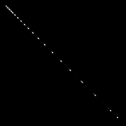
Nearly all the hits are along the diagonal because the brightnesses of
these two images are very similar. We can also joint histogram all
the color components at the same time, because unu jhisto
treats all the input nrrds as basically 1-dimensional lists of values.
unu jhisto -i gray235.ppm gray236.ppm -b 256 256 -t uchar | topng doc/2356.png
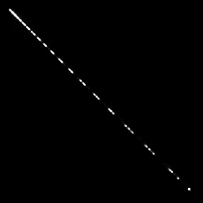
Now for the fun part. We can visualize the inter-slice brightness
changes between four slices by putting the joint histograms of
the gray scales from successive pairs of slices into the red, green,
and blue channels of a color image.
unu jhisto -i gray235.ppm gray236.ppm -b 256 256 -t uchar -o 0.pgm
unu jhisto -i gray236.ppm gray237.ppm -b 256 256 -t uchar -o 1.pgm
unu jhisto -i gray237.ppm gray238.ppm -b 256 256 -t uchar -o 2.pgm
unu join -i {0,1,2}.pgm -a 0 -incr -o grjh23.ppm
unu jhisto -i gray324.ppm gray325.ppm -b 256 256 -t uchar -o 0.pgm
unu jhisto -i gray325.ppm gray326.ppm -b 256 256 -t uchar -o 1.pgm
unu jhisto -i gray326.ppm gray327.ppm -b 256 256 -t uchar -o 2.pgm
unu join -i {0,1,2}.pgm -a 0 -incr -o grjh32.ppm
unu jhisto -i gray417.ppm gray418.ppm -b 256 256 -t uchar -o 0.pgm
unu jhisto -i gray418.ppm gray419.ppm -b 256 256 -t uchar -o 1.pgm
unu jhisto -i gray419.ppm gray420.ppm -b 256 256 -t uchar -o 2.pgm
unu join -i {0,1,2}.pgm -a 0 -incr -o grjh41.ppm
unu jhisto -i gray292.ppm gray293.ppm -b 256 256 -t uchar -o 0.pgm
unu jhisto -i gray293.ppm gray294.ppm -b 256 256 -t uchar -o 1.pgm
unu jhisto -i gray294.ppm gray295.ppm -b 256 256 -t uchar -o 2.pgm
unu join -i {0,1,2}.pgm -a 0 -incr -o grjh29.ppm
convert grjh23.ppm doc/grjh23.png
convert grjh32.ppm doc/grjh32.png
convert grjh41.ppm doc/grjh41.png
convert grjh29.ppm doc/grjh29.png
| 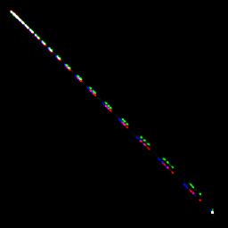
| 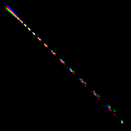
| 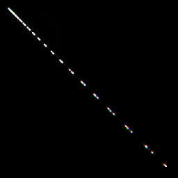
| 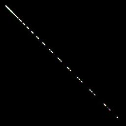
|
| grjh23.png
| grjh32.png
| grjh41.png
| grjh29.png
|
We can use ilk to stretch the joint histograms away from the
diagonal, to get a clearer picture of what changed:
ilk -i grjh23.ppm -t rotate:-45 scale:1,4 rotate:45 | topng doc/grjh23st.png
ilk -i grjh32.ppm -t rotate:-45 scale:1,4 rotate:45 | topng doc/grjh32st.png
ilk -i grjh41.ppm -t rotate:-45 scale:1,4 rotate:45 | topng doc/grjh41st.png
ilk -i grjh29.ppm -t rotate:-45 scale:1,4 rotate:45 | topng doc/grjh29st.png
| 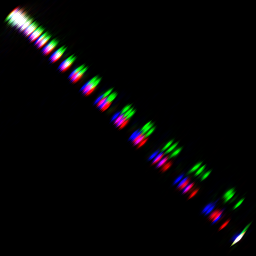
| 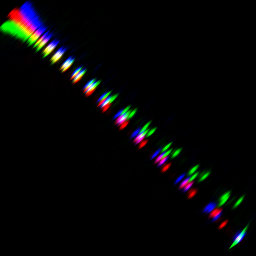
| 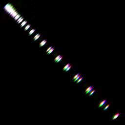
| 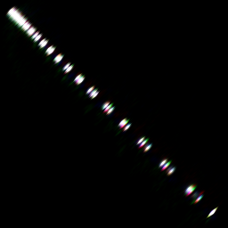
|
| grjh23st.png
| grjh32st.png
| grjh41st.png
| grjh29st.png
|
Well, this is troubling. The manner in which the brightness changed
in the first case is diferent than the second case (the second is
quite non-linear), meaning that the method of brightness correction
would ideally vary according to Z location. Worse yet, in the third
case, where there is an isolated darker slice, the gray strip joint
histograms indicate that there is not any obvious brightness change
among the four slices, at least not significantly more than in the
fourth case, where we know that there is no brightness variation in
the head. For comparison, we can form joint histograms of the head
images themselves, and again stretch them with ilk:
unu jhisto -i avf1079{b,c}.raw.Z.head.ppm -b 256 256 -t int \
| unu quantize -b 8 -max 700 -o 0.pgm
unu jhisto -i avf10{79c,80a}.raw.Z.head.ppm -b 256 256 -t int \
| unu quantize -b 8 -max 700 -o 1.pgm
unu jhisto -i avf1080{a,b}.raw.Z.head.ppm -b 256 256 -t int \
| unu quantize -b 8 -max 700 -o 2.pgm
unu join -i {0,1,2}.pgm -a 0 -incr -o hdjh23.ppm
unu jhisto -i avf1109{a,b}.raw.Z.head.ppm -b 256 256 -t int \
| unu quantize -b 8 -max 700 -o 0.pgm
unu jhisto -i avf1109{b,c}.raw.Z.head.ppm -b 256 256 -t int \
| unu quantize -b 8 -max 700 -o 1.pgm
unu jhisto -i avf11{09c,10a}.raw.Z.head.ppm -b 256 256 -t int \
| unu quantize -b 8 -max 700 -o 2.pgm
unu join -i {0,1,2}.pgm -a 0 -incr -o hdjh32.ppm
unu jhisto -i avf1140{a,b}.raw.Z.head.ppm -b 256 256 -t int \
| unu quantize -b 8 -max 700 -o 0.pgm
unu jhisto -i avf1140{b,c}.raw.Z.head.ppm -b 256 256 -t int \
| unu quantize -b 8 -max 700 -o 1.pgm
unu jhisto -i avf114{0c,1a}.raw.Z.head.ppm -b 256 256 -t int \
| unu quantize -b 8 -max 700 -o 2.pgm
unu join -i {0,1,2}.pgm -a 0 -incr -o hdjh41.ppm
unu jhisto -i avf1098{b,c}.raw.Z.head.ppm -b 256 256 -t int \
| unu quantize -b 8 -max 700 -o 0.pgm
unu jhisto -i avf109{8c,9a}.raw.Z.head.ppm -b 256 256 -t int \
| unu quantize -b 8 -max 700 -o 1.pgm
unu jhisto -i avf1099{a,b}.raw.Z.head.ppm -b 256 256 -t int \
| unu quantize -b 8 -max 700 -o 2.pgm
unu join -i {0,1,2}.pgm -a 0 -incr -o hdjh29.ppm
convert hdjh23.ppm doc/hdjh23.png
convert hdjh32.ppm doc/hdjh32.png
convert hdjh41.ppm doc/hdjh41.png
convert hdjh29.ppm doc/hdjh29.png
ilk -i hdjh23.ppm -t rotate:-45 scale:1,4 rotate:45 | topng doc/hdjh23st.png
ilk -i hdjh32.ppm -t rotate:-45 scale:1,4 rotate:45 | topng doc/hdjh32st.png
ilk -i hdjh41.ppm -t rotate:-45 scale:1,4 rotate:45 | topng doc/hdjh41st.png
ilk -i hdjh29.ppm -t rotate:-45 scale:1,4 rotate:45 | topng doc/hdjh29st.png
| 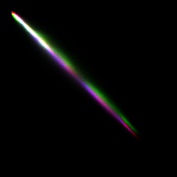
| 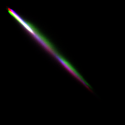
| 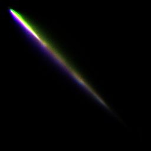
| 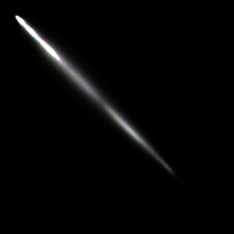
|
| hdjh23.png
| hdjh32.png
| hdjh41.png
| hdjh29.png
|
| 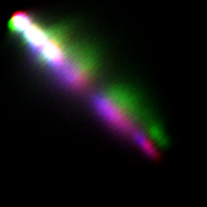
| 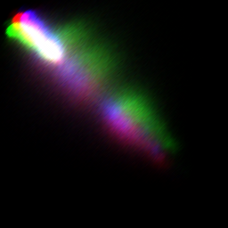
| 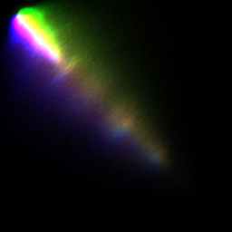
| 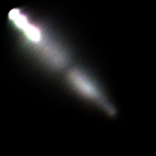
|
| hdjh23st.png
| hdjh32st.png
| hdjh41st.png
| hdjh29st.png
|
The joint histograms of the head images in the first two cases look
very similar to those of the gray scale strips. In these cases, the
strips seemed to work well to record the brightness variations that
affected the central region of the images. The third and fourth cases
are more troubling. The joint histograms of the gray scale strips in
neither of these cases indicated obvious brightness variations, but
the joint histograms for the head images show otherwise. There is a
significant variation recorded in the third histogram, while in the
fourth case, the histogram confirms that these slices had no variation.
It seems, then, that the gray scale strips unfortunately did not fully
do the job of recording brightness variations that affect the data
inside the body. Even if the gray scale strips were extracted for
every single slice, they don't contain the necessary information
to automatically correct the brightness.